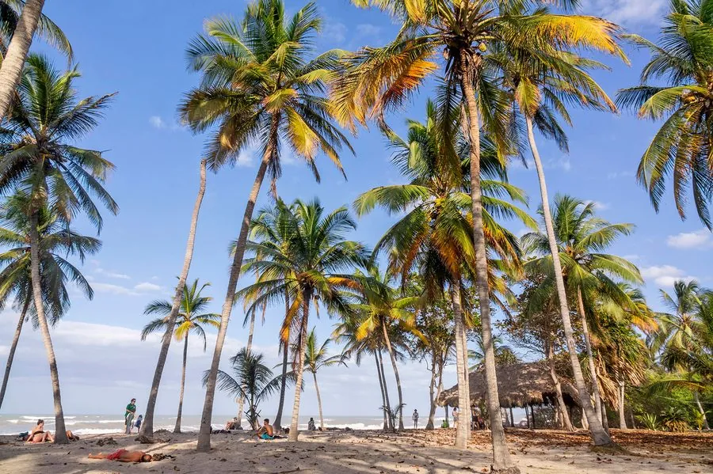

Dag 18–21 · Rustig Caribisch Strandleven · Tubing · Surfen
Een korte en gemakkelijke rit van Tayrona naar het rustige strandleven van Palomino. Vertrekken na ontbijt — geen haast. Check met het Quetzal Dorado Eco-Lodge voor het beste vervoer.
📖 Lees meer: 🛶 Tubing → 📖 Lees meer: 🏖️ Strand → 📖 Lees meer: 🏄 Surfen →Dé activiteit van Palomino: op een opblaasbare ring de Rio Palomino afdrijven vanuit de jungle naar de zee. Een ontspannend en uniek avontuur. Regelen via het hotel.
Wat is tubing? Je krijgt een grote opblaasbare ring en laat jezelf meegesleurd door de stroom van de Rio Palomino — van een startpunt in de jungle tot aan het punt waar de rivier in zee stroomt. Onderweg: jungleoever, vogels, frisse zoete rivier.
Praktisch: Boek via de receptie van je accommodatie. Zij regelen de gids en vervoer. Neem een waterdichte case mee voor je telefoon.
Palomino heeft consistente golven — ideaal voor surfbeginnners en bodyboarden. Surfboards en bodyboards te huur aan het strand. Lessen ook beschikbaar via lokale operators.
👨🦳 Sluit de dag af zoals Tony: een glas aguardiente aan het strand. De nationale anijsdrank van Colombia — koud, simpel, perfect bij zonsondergang op het Caribisch zand.

Wandel langs het ongerepte strand van Palomino naar de Rio San Salvador — een rivier die in zee stroomt. Prachtige combinatie van jungle-achtergrond, golven en stilte. Bijna geen toeristen.
Vanavond zet heel Colombia kaarsen en papieren lampionnen buiten — op stoepen, muurtjes en hier ook op het strand. Het is de onofficiële start van de kerstperiode en voor veel Colombianen de mooiste avond van het jaar. Jullie zitten er toevallig precies in. Koop zelf een setje kaarsen in de tienda en zet ze bij je posada buiten.
📖 Lees meer over Día de las Velitas →Je laatste volle dag aan zee, en meteen een officiële feestdag: Inmaculada Concepción. Half Colombia is vrij en trekt naar de kust, dus het wordt drukker dan je gewend bent in Palomino. Surfles, een strandwandeling naar de monding van de Río San Salvador, of gewoon een hangmat.
Vervoer regelen: dag 22 reis je naar Santa Marta en vlieg je naar Bogotá. Rond een feestdag zitten bussen en collectivo's voller. Vraag je accommodatie vandaag al om een plek te reserveren of een taxi te regelen.
Zwemmen: de stroming voor Palomino is verraderlijk. Blijf bij de plekken waar locals het water in gaan en ga niet ver uit de kust.
Op dag 22 vertrek je via Santa Marta — ruim een uur van Palomino. Vanuit Simón Bolívar airport (SMR) vlieg je met JetSMART JA5171 om 14:42 naar Bogotá (geboekt, €283,69 voor twee, PNR DG5NPR). Vertrek rond 11:30 uit Palomino. Je bent al op dag 22 in Bogotá — dag 23 is een vrije dag!
Vier nachten is ruim voor één strandstraat. Niets hiervan staat ingepland; kies ter plaatse naargelang zin en weer. Bron: Lonely Planet 2023 en Rough Guide 2024.
Een reeks watervallen met natuurlijke zwemgaten, 20 minuten wandelen vanaf de kustweg, pal op de route van Tayrona naar Palomino. Bus eruit, zwemmen, de volgende bus verder — geen omweg.
Hoe: vraag de buschauffeur te stoppen bij "Quebrada Valencia" (±20 min voorbij El Zaíno). Het pad begint aan de weg; met bagage is dat lastig — laat de rugzakken in de lodge of plan het als aparte halve dag vanuit Palomino (±30 min bus).
Beste moment: ochtend, voor de dagjesmensen uit Santa Marta.
Een uur oostwaarts langs de kust: van oktober tot maart zitten duizenden roze flamingo's in de ondiepe lagunes van het reservaat. Een lokale visser vaart je in een cayuco (kano zonder motor) tot vlak bij de vogels; ook lepelaars, ibissen en fregatvogels.
Hoe: bus Palomino → Riohacha, uitstappen in Camarones, mototaxi naar de lagune. Terug idem; laatste bussen tot ±18u.
Let op: dag 21 is een feestdag — drukker verkeer op de kustweg. Vroeg vertrekken (7u) en tegen de middag terug.
Eten: gegrilde vis op Playa de Camarones na de tocht.
Drie uur langs de Río Palomino stroomopwaarts naar een dorp van de Kogi, de inheemse bewoners van de Sierra Nevada — de enige plek op de reis waar je hun cultuur van dichtbij ziet. Met gids; terug kan drijvend op een band.
Boeken: via de accommodatie of Riverside House (Rough Guide). Alleen met lokale gids — de gemeenschap beslist over bezoek. Respectvol: geen foto's zonder toestemming, geen alcohol, lange broek.
Fysiek: vlak maar warm en vochtig; 2L water, pet, zonnecrème.
Hetzelfde traject als het tubing, maar met een peddel: van de jungle tot aan de monding, met kans op otters en brulapen langs de oever. Rustiger alternatief voor wie tubing te traag vindt.
Palomino heeft drie scholen met instructeurs erkend door de Colombiaanse surffederatie: Palomino Surf & Bodyboard School, Tide Escuela de Surf en Surf by José. December is windseizoen met de grootste golven (2–3 m) — als beginner ga je vroeg, als de zee nog vlak is.
Ochtendyoga bij meerdere hostels (drop-in), two-for-one cocktails bij zonsondergang bij Finca Escondida, en Tiki Hut aan Playa Donaires voor de avond. Het "hippie-chic" Palomino uit Lonely Planet.